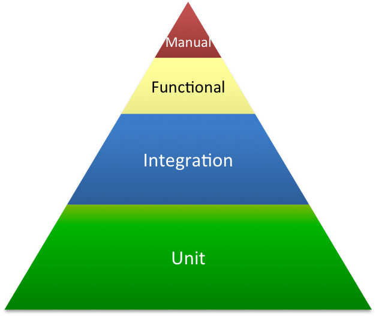

TDD & Continuous Integration
with Magento

Test Driven Development
The repetition of a very short development cycle

Test Driven Development
Example
class MoneyTest extends \PHPUnit_Framework_TestCase
{
public function testMultiplication()
{
$five = new Money(5);
$five->times(2);
$this->assertEquals(10, $five->amount);
}
}
class Money
{
public $amount;
public function __construct($amount)
{
// TODO
}
public function times($multiplier)
{
// TODO
}
}
RED
Test Driven Development
Example
class Money
{
public $amount = 10; // aka 5 * 2
public function __construct($amount)
{
// TODO
}
public function times($multiplier)
{
// TODO
}
}
GREEN
Test Driven Development
Example
class Money
{
public $amount = 0;
public function __construct($amount)
{
$this->amount = $amount;
}
public function times($multiplier)
{
$this->amount *= $multiplier;
}
}
REFACTOR
Test Driven Development
benefits
- You can write small feature's subsets
- You don't have to worry about all the complexity of your feature
- All features are tested
- You reduce bugs and regressions rate
- Your code stays clean
- Your code is documented
- And last but not least, you're more confident in making changes!
Tests Pyramid
Unit Tests with Magento
Magento => Hardcoded dependencies => Testing hell
class Vendor_Module_Model_Something extends Mage_Core_Model_Abstract
{
public function doSomethingWithProduct($productId)
{
$product = Mage::getModel('catalog/product')->load($productId);
//do something with $product
}
}
Unit Tests with Magento
We have to refactor, for example with dependency injection…
class Vendor_Module_Model_Something extends Mage_Core_Model_Abstract
{
protected $productModel;
public function setProductModel(
Mage_Catalog_Model_Product $productModel
) {
$this->productModel = $productModel;
}
public function doSomethingWithProduct($productId)
{
$product = $this->productModel->load($productId);
//do something with $product
}
}
Unit Tests with Magento
… so we can test it with something like this:
class Vendor_Module_Tests_Unit_SomethingTest extends
\PHPUnit_Framework_TestCase
{
public function testDoSomethingWithProduct()
{
$productModelMock = $this->getMock('Mage_Catalog_Model_Product');
$productModelMock->expects($this->once())
->method('load')
->with(1)
->will($this->returnValue(new Mage_Catalog_Model_Product()));
$somethingModel = new Vendor_Module_Model_Something();
$somethingModel->setProductModel($productModelMock);
$somethingModel->doSomethingWithProduct(1);
// assert that something has been done
}
}
Integration & Functional tests
with Magento
EcomDev_PHPUnit
github.com/EcomDev/EcomDev_PHPUnit
EcomDev_PHPUnit
- Magento extension
- Doesn't change core files
- Separate database connection is used for tests
- Different levels of test integration
EcomDev_PHPUnit
Easy installation
$ modman clone [--branch=dev] git://github.com/EcomDev/EcomDev_PHPUnit.git
$ cd /path/to/magento/shell
$ php ecomdev-phpunit.php -a magento-config --db-name db_name --base-url http://your.magento.url/
$ phpunit
EcomDev_PHPUnit
Enable an extension for testing
<!-- app/code/local/Vendor/Module/etc/config.xml -->
<phpunit>
<suite>
<modules>
<Vendor_Module />
</modules>
</suite>
</phpunit>
EcomDev_PHPUnit
Different levels of test integration
- EcomDev_PHPUnit_Test_Case is for testing models, blocks and helpers
- EcomDev_PHPUnit_Test_Case_Config is for testing your module configuration
- EcomDev_PHPUnit_Test_Case_Controller is for testing your controller actions and layout rendering process
EcomDev_PHPUnit
Put every test in its place
app/code/local/Vendor/Module
├── Block
├── Helper
├── Model
├── Test
│ ├── Block (EcomDev_PHPUnit_Test_Case)
│ ├── Config (EcomDev_PHPUnit_Test_Case_Config)
│ ├── Controller (EcomDev_PHPUnit_Test_Case_Controller)
│ ├── Helper (EcomDev_PHPUnit_Test_Case)
│ └── Model (EcomDev_PHPUnit_Test_Case)
├── controllers
└── etc
EcomDev_PHPUnit
Model/Block/Helper testing
- Fixtures support (YAML files)
- Expectations support (YAML files)
- Data providers support (YAML files)
- Indexing control (@doNotIndex & @doNotIndexAll)
-
Useful test doubles
getModelMock(), getResourceModelMock(), getBlockMock(), getHelperMock(), replaceByMock(), … -
Useful assertions
assertEventDispatched(), assertEventDispatchedExactly(), assertEventDispatchedAtLeast(), …
EcomDev_PHPUnit
Model/Block/Helper testing
class EcomDev_Example_Test_Model_Product extends EcomDev_PHPUnit_Test_Case
{
/**
* @test
* @loadFixture
* @doNotIndexAll
* @dataProvider dataProvider
*/
public function priceCalculation($productId, $storeId)
{
$storeId = Mage::app()->getStore($storeId)->getId();
$product = Mage::getModel('catalog/product')->setStoreId($storeId)->load($productId);
$expected = $this->expected('%s-%s', $productId, $storeId);
$this->assertEquals(
$expected->getFinalPrice(),
$product->getFinalPrice()
);
$this->assertEquals(
$expected->getPrice(),
$product->getPrice()
);
}
}
EcomDev_PHPUnit
Fixtures
- Implemented with YAML files
- Enabled with @loadFixture annotation
- Database purge is performed after test run
- Database purge is performed only for fixtures-specific tables
EcomDev_PHPUnit
Fixtures
YAML files capabilities:
- scope
- config
- configXml
- eav
- tables
EcomDev_PHPUnit
Fixtures
scope:
website: # Initialize websites
- website_id: 2
name: USA Website
group: # Initializes store groups
store: # Initializes store views
config:
default/catalog/price/scope: 1 # Set price scope to website
eav:
catalog_product:
- entity_id: 1
type_id: simple
sku: book
name: Book
short_description: Book
description: Book
EcomDev_PHPUnit
Configuration testing
Many useful configuration assertions:
-
Class Alias Assertions
assertBlockAlias(), assertModelAlias(), assertHelperAlias(), … -
Module Assertions
assertModuleCodePool(), assertModuleDepends(), assertModuleVersion(), … -
Layout Assertions
assertLayoutFileDefined(), assertLayoutFileExists(), assertLayoutFileExistsInTheme(), … -
Event Observer Assertions
assertEventObserverDefined(), assertEventObserverNotDefined(), … -
Config Node Assertions
assertConfigNodeHasChild(), assertConfigNodeHasChildren(), assertConfigNodeContainsValue(), …
EcomDev_PHPUnit
Configuration testing
// app/code/local/Vendor/Module/Test/Config/Main.php
class Vendor_Module_Test_Config_Main extends
EcomDev_PHPUnit_Test_Case_Config
{
public function testRewrite()
{
$this->assertModelAlias(
'catalog/convert_adapter_product',
'Vendor_Module_Model_DataFlow_Catalog_Product_Adapter'
);
$this->assertBlockAlias(
'adminhtml/system_convert_gui_edit_tab_wizard',
'Vendor_Module_Block_Wizard'
);
}
}